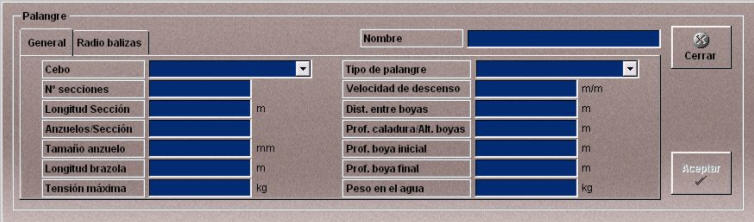
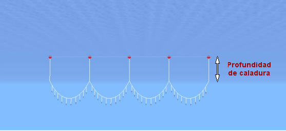
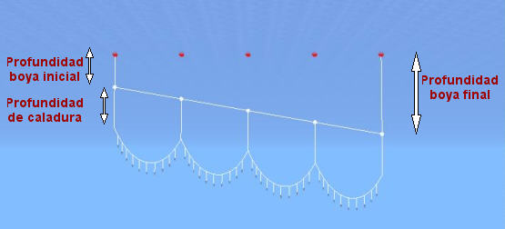
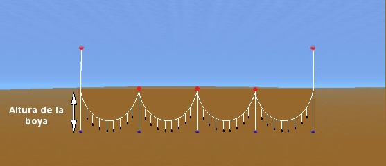
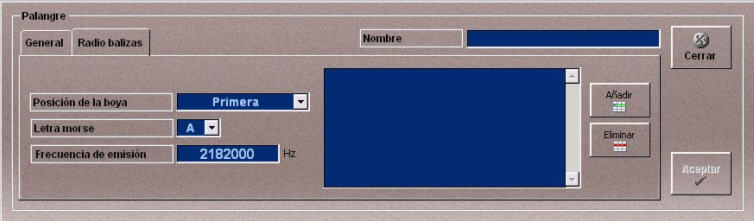

Palangre
La creación y edición de artes de palangre se realiza mediante la ventana Palangre. El palangre creado que podrá ser añadido a las unidades participantes en los Ejercicios.
Esta ventana tiene dos solapas General y Radio Balizas al seleccionar cada una de ellas el contenido de la ventana varía, presentando los datos necesarios para la definición completa del palangre.
A continuación se describen los datos que incluye esta ventana.
Nombre: Nombre del palangre.
Formato: caracteres alfanuméricos.
Datos de la solapa General

Cebo: Permite seleccionar uno de los cebos disponibles. Los cebos disponibles se establecen en el fichero de configuración Ulises.ini.
Número de Secciones: Número de secciones, entendiéndose por sección el espacio delimitado por dos boyas del palangre.
Unidades: adimensional
Rango: 1- 70
Longitud de la Sección: Longitud del cable de cada sección.
Unidades: metros
Rango: 0.50- 400.00
Anzuelos/ Sección: Número de anzuelos en cada sección.
Unidades: adimensional
Rango: 4- 40
Tamaño del Anzuelo: Tamaño del anzuelo.
Unidades: milímetros
Rango: 0.10- 200.00
Longitud de la Brazola: Longitud del hilo de la brazola.
Unidades: metros
Rango: 0.00- 5.00
Tensión máxima: Máxima tensión que soporta la red.
Unidades: kilogramos
Rango: 0.10- 1000000.00
Tipo de Palangre: Permite especificar distintos tipos de palangre en función de la profundidad (ver esquemas al final de esta sección). Puede tomar los siguientes valores.
Velocidad de Descenso: Velocidad de descenso del palangre.
Unidades: metros/minuto
Rango: 0.00- 300.00
Distancia entre Boyas: Distancia entre dos boyas consecutivas.
Unidades: metros
Rango: 0.10- 500.00
Prof. Boya Inicial: Profundidad de la boya inicial. Sólo válida para el palangre de media agua (ver esquema).
Unidades: metros
Rango: 0.10- 1000000.00
Prof. Boya Final: Profundidad de la boya final. Sólo válida para el palangre de media agua (ver esquema).
Unidades: metros
Rango: 0.10- 104000.00
Peso en el agua: Peso de la red en el agua.
Unidades: kilogramos
Rango: 0.10- 10000.00
Prof. Calad / Alt. Boyas: Para cada tipo de palangre define la profundidad de caladura o la altura de la boya que se especifica en los esquemas que se muestran a continuación.
Unidades: metros
Rango: 0.10- 1000000.00
Palangre de Superficie

Palangre de Media Agua

Palangre de Piedra-Bola

Datos de la solapa Radio Balizas

Aquí se define la lista de balizas de localización del palangre. Para incluir una radio baliza en la lista, hay que rellenar los campos y pulsar el botón Añadir. Para eliminar una radio baliza, hay que seleccionarla en la lista y pulsar el botón Eliminar.
Las balizas se definen con los siguientes datos:
Posición de la Boya: Indica la posición en la que sitúa la baliza de localización. Puede tomar los siguientes valores:
Letra Morse: Define la letra Morse asociada a la boya que actúa como radio baliza. Esta boya es detectada por el radiogoniómetro.
Frecuencia de Emisión: Frecuencia en la emite la radio baliza.
Unidades: hercios
Rango: 0 - 999999999